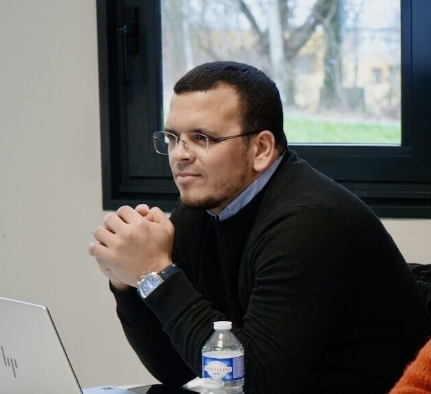

Associate Professor of Telecommunications and AI
INSA Hauts-de-France
I am an Associate Professor in the Department of Electronics at INSA Hauts-de-France and Université Polytechnique Hauts-de-France. My research focuses on new methods and paradigms of image and video compression involving AI techniques and learning approaches. We look beyond image reconstruction by building compression methods that work well when the goal is to use the data for learning tasks such as classification and image retrieval in the compressed domain.
Before joining INSA Hauts-de-France, I completed my Ph.D. at Université Badji Mokhtar Annaba in Algeria and worked for more than two years as a postdoctoral researcher at IMT Atlantique in Brest, France.
For a full list of my publications, please visit my Google Scholar profile.
I am passionate about teaching and mentoring students. Currently, I teach with the AudioVisual Department of the INSA Hauts-de-France the following courses:
Email: ahcene.aliouet@insa-hdf.fr
Office: Batiment Lottman
GitHub: Ahcen23